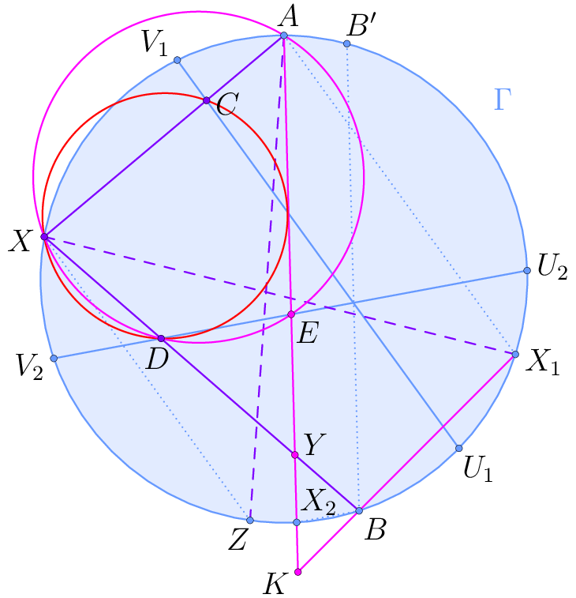
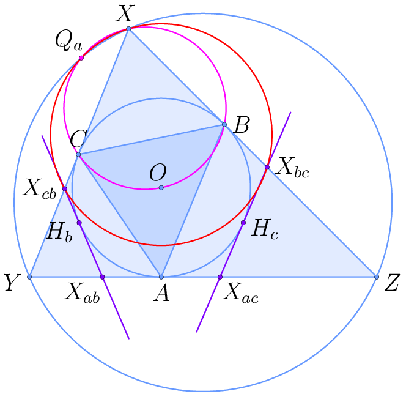
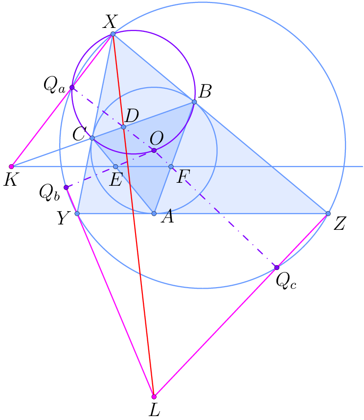
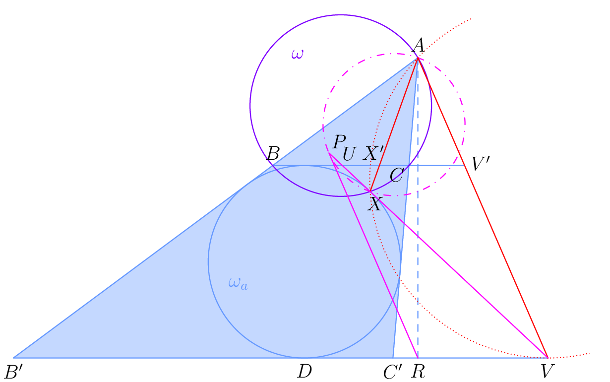
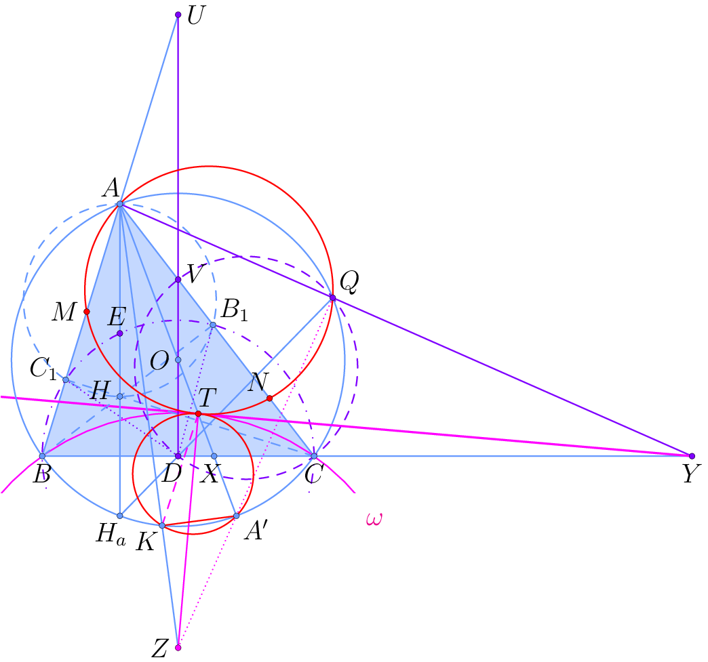
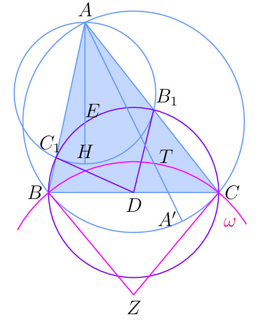
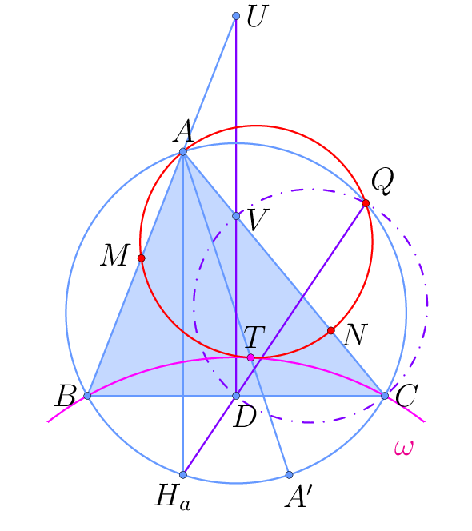
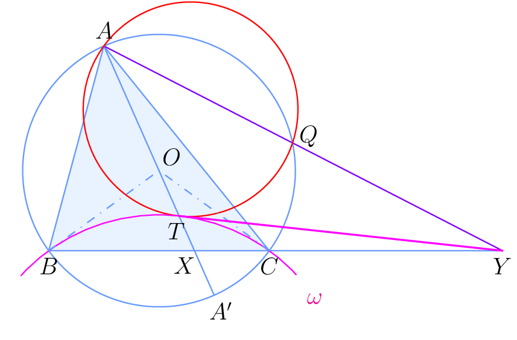
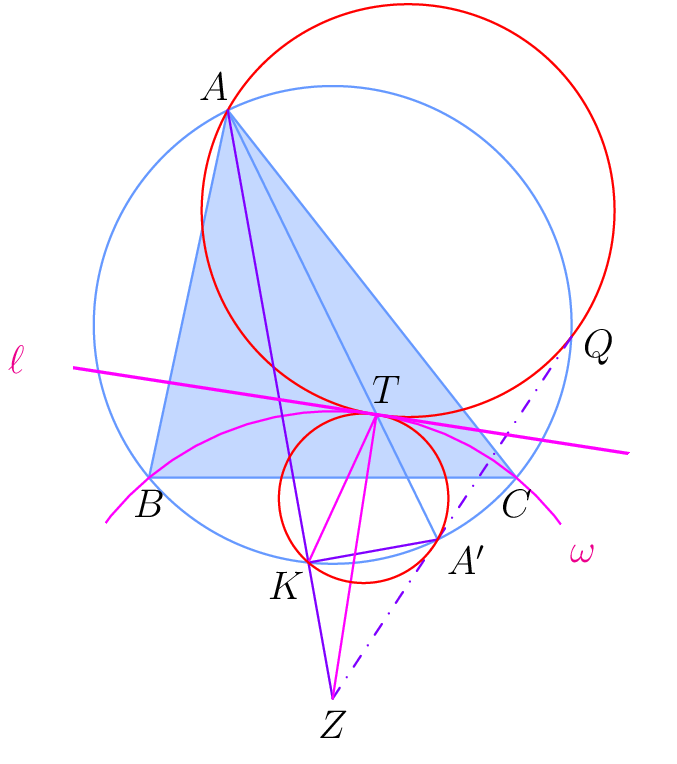

Nyan's code
TeX
Refer to my GH repo. Comprehensive list of that repo's contents:- LaTeX style files:
Select geometry diagrams
To problems I'm particularly proud of solving. One of these is displayed on the main page. They also appear on https://unity858.github.io/latex/geo-favs.pdf.APMO 2014/5 (27-8 Dec. '22)

USA TST 2021/2 (23 Dec. '22)
(well i did this before, but this time only used synthetics; screw trig) Brazil Olympic Revenge 2021/3 (10-11 Dec. '22)
See main page.USEMO 2020/3 (3-5 Dec. '22)
No, it's too hard to make one master diagram for this problem without being completely unintelligible, not that I didn't try.


Shortlist 2021/G8 (21 Nov. '22)
AoPS thread China TST 2015/2/3 (21 Aug. '22, sol patched later)



